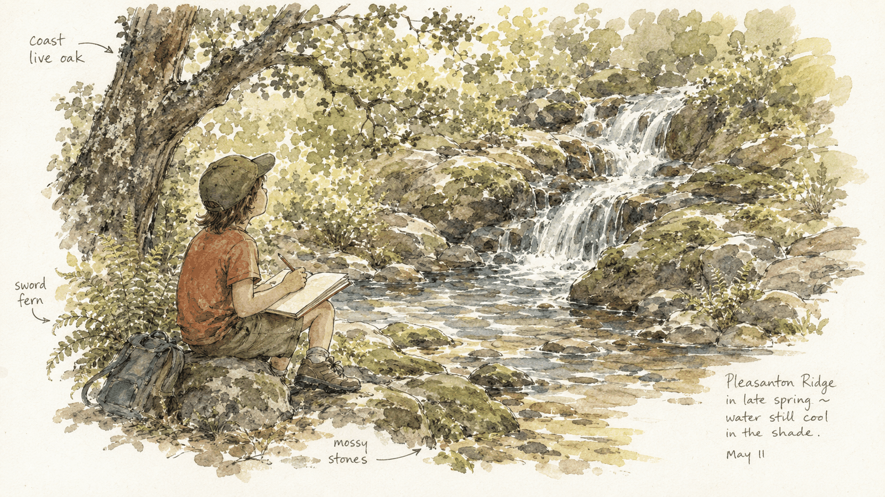
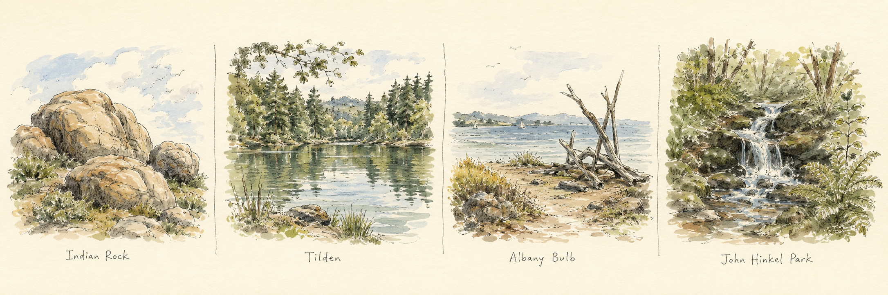

Your First Nature Drawing
At the end of today's hike, your group reaches the little waterfall in the far corner of John Hinkel Park. You already pause here to listen to the water. This page is an invitation to do one more small thing while you're sitting there: help your child make their very first nature drawing — and plant the seed for a nature journal they'll keep long after the walk home.

Why draw what we see?
You don't have to be an artist, and neither does your child. As naturalist Clare Walker Leslie puts it in Keeping a Nature Journal, drawing in nature isn't about making a pretty picture — it's a way of learning to see. A drawing slows a child down until they notice the things a photograph races past: how many points are on that oak leaf, which way the water folds over the rock, what the light is doing.
It's an old practice. Long before cameras, the people who taught us about the natural world — John James Audubon, John Muir, Beatrix Potter — looked closely and drew what they saw. And the quiet attention it asks for is the same kind of calm your group already feels listening to the falls: time spent in nature improves attention, lifts mood, and lowers stress for kids and grown-ups alike.
At the Waterfall: the First Drawing
Find a comfortable seat on a rock or log near the water. The whole thing takes about 15–20 minutes and folds right into the listening pause your hike guide already includes. Keep it light — there is no wrong way to do this.

- Listen first. Close your eyes and listen to the water for a minute or two — the same pause your group already takes. Ask: what do you hear, besides the water?
- Write the header. At the top of the page, write the date, the place (John Hinkel Park), the weather, and how the air feels. This is how every nature-journal page begins.
- Pick just one thing. Not the whole scene — one small thing close by: a fern frond, a wet stone, a fallen coast live oak or bay laurel leaf, or the shape the water makes as it falls.
- Look longer than you draw. Spend more time looking at the thing than at the paper. Let the pencil follow your eyes slowly.
- Add a few words. Next to the drawing, jot one thing you notice and one thing you wonder — "I notice the fern curls at the tip. I wonder why it's so green here."
Keep Going: How to Start a Nature Journal
That single drawing at the falls can become the first page of a nature journal. A journal is just a plain notebook your child returns to — at the next Club hike, in the backyard, on the walk to school. Here are the principles that make it work, drawn from Clare Walker Leslie's approach. They work anywhere, not just at John Hinkel.
-
Pick a Sit Spot
Choose one comfortable place to settle and stay a while — a rock by the creek, a bench under an oak, a spot with a view of the Bay. Stillness is what lets the noticing begin.
Try it: sit for two quiet minutes before the pencil comes out.
-
Start Every Page the Same Way
Date, place, weather. Always. It turns a doodle into a record, and over time those headers become a map of where your child has been and how the seasons turned.
Try it: make the header a habit — it's the "ready, set" of every page.
-
Look First, Then Draw
The secret to drawing is really just looking. Study the thing — its shape, edges, and parts — before and while the pencil moves.
Try it: spend twice as long looking as drawing.
-
Drawing Is for Seeing — Not for Perfect
Quick, rough, and unfinished is good. A nature journal is a thinking tool, not an art gallery. Messy pages mean real looking happened.
Try it: give each sketch only a few minutes, then move on.
-
Use Words, Pictures, and Numbers Together
Draw the leaf, name it if you can, and count things: 5 points, 3 birds, 2 o'clock. Words and numbers around a sketch capture what a picture alone can't.
Try it: add one number to every page.
-
Get Curious
The most important words in a nature journal are I notice…, I wonder…, and It reminds me of…. Questions are more valuable than answers — they're what pull you back outside.
Try it: end every page with one "I wonder" question.
-
Add Color and the Little Details
When there's time, add color and the small "field marks" that make a thing itself — the red flash on a bird's wing, the white underside of a bay leaf.
Try it: pack a few colored pencils and color just one detail.
-
Return to the Same Places
Come back to a favorite spot again and again — your hike guide already suggests returning to Mortar Rock with family. Watch one oak through Berkeley's green, wet winter and its golden, dry summer. The same place is never the same twice.
Try it: draw one tree this month, then again next season.
What to Pack
Everything fits in the daypack you already bring on the hike:
- A small, sturdy notebook — or just a plain sheet of paper
- A pencil — and an eraser you mostly won't need
- A few colored pencils or markers (optional)
- Something hard to lean on
- Water
- Orange slices for the trail

Where to Explore Next
A nature journal travels well. Bring it on the Club's other outings and watch the pages fill with the different corners of the East Bay:
- Indian Rock Park
- Tilden & Lake Anza
- Albany Bulb
- Berkeley Marina
- Your own backyard

Tips for Parents
- Keep it short. Five honest minutes beats a forced half hour.
- Model it. Pull out your own page and draw alongside them — badly, on purpose. It gives them permission.
- Don't correct the art. Ask "what did you notice?" instead of "is that what it really looks like?"
- Let them choose the subject. A bug they love beats a landscape you picked.
- Wonder out loud. Your curiosity is contagious.
First-Page Checklist
Tick these off at the waterfall:
- We found a comfortable seat and listened to the water.
- We wrote the date, place, and weather at the top.
- We each picked one small thing to draw.
- We looked longer than we drew.
- We wrote one "I notice" and one "I wonder."
Make a Day of the Whole Walk
This drawing is the quiet finish to a longer adventure. Our companion page is the full Thousand Oaks → John Hinkel Park hike guide — Berkeley history, plant identification, a real rock to climb, and the waterfall where this page begins.